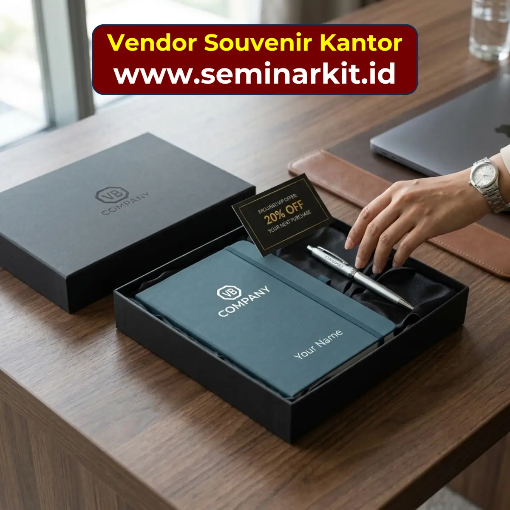

Dalam project souvenir kantor, keterlambatan quotation sering dianggap sebagai respons vendor yang lambat. Padahal, pada banyak kasus, akar masalahnya justru berasal dari brief awal yang tidak lengkap. Vendor harus menebak kebutuhan klien, lalu mengirim pertanyaan klarifikasi berulang kali. Proses ini menghabiskan waktu di fase awal dan membuat timeline seluruh project ikut mundur. Ketika event punya tanggal tetap, keterlambatan di tahap quotation bisa berdampak sampai ke pengiriman akhir.
Template brief berfungsi sebagai alat sinkronisasi antara kebutuhan internal perusahaan dan pemahaman vendor. Dengan format brief yang baku, setiap project dimulai dari data yang konsisten, sehingga vendor bisa menyiapkan rekomendasi produk dan penawaran harga lebih cepat. Tim purchasing juga mendapatkan manfaat besar karena lebih mudah membandingkan beberapa vendor secara apple to apple.
Artikel ini memberikan kerangka detail untuk menyusun template brief souvenir kantor yang bisa dipakai berulang. Anda tidak hanya mendapatkan daftar elemen wajib, tetapi juga alasan kenapa setiap elemen penting bagi kecepatan, akurasi, dan kualitas hasil pengadaan.
Kenapa Brief Menentukan Kecepatan Quotation
Vendor tidak bisa memberikan penawaran akurat jika informasi yang diterima masih terlalu umum. Kalimat seperti "kami butuh souvenir untuk event" tidak cukup untuk menghitung harga realistis. Vendor perlu tahu detail program, profil penerima, target kualitas, dan batas waktu agar dapat mengkurasi item yang sesuai. Semakin lengkap brief, semakin sedikit waktu yang terbuang untuk pertanyaan ulang.
Selain mempercepat respon vendor, brief yang baik juga melindungi tim internal dari kebingungan saat evaluasi. Ketika data awal sudah terstruktur, komparasi antar penawaran menjadi lebih objektif. Tim manajemen dapat mengambil keputusan lebih cepat karena setiap opsi dibandingkan dengan parameter yang sama.
Dalam konteks perusahaan, kecepatan quotation bukan sekadar soal cepat dapat angka. Ini terkait langsung dengan kecepatan approval internal, kepastian produksi, dan kemampuan tim menjaga deadline event.
Blok 1: Informasi Konteks Program
Bagian pertama template brief sebaiknya berisi konteks program secara ringkas tetapi jelas. Tuliskan nama event, tujuan utama, tanggal acara, dan karakteristik peserta. Informasi ini membantu vendor memahami tingkat formalitas dan citra yang ingin dibangun. Program onboarding tentu punya kebutuhan berbeda dibanding gala dinner atau customer appreciation.
Contoh konteks yang efektif: "Onboarding 250 karyawan baru pada minggu pertama Juli, tujuan meningkatkan sense of belonging, kebutuhan paket fungsional untuk penggunaan harian." Dari satu kalimat ini, vendor sudah punya gambaran awal mengenai tone produk dan kisaran opsi yang relevan.
Jika event memiliki tema khusus, sertakan juga dalam brief. Tema akan memengaruhi pilihan warna, desain kemasan, dan pendekatan branding. Makin jelas konteks, makin cepat vendor memetakan solusi.
Blok 2: Spesifikasi Produk yang Diinginkan
Spesifikasi produk adalah bagian yang paling menentukan akurasi harga. Cantumkan jenis item yang diinginkan, rentang ukuran, preferensi material, dan teknik branding yang diharapkan. Anda tidak harus sangat teknis, tetapi cukup spesifik agar vendor tidak menebak. Misalnya, "tumbler stainless 500 ml, logo laser atau sablon 1 warna, warna dominan hitam atau navy."
Jika perusahaan terbuka pada alternatif, nyatakan dengan jelas. Contoh: "boleh opsi material setara selama ketahanan dan fungsi tetap sama." Pernyataan ini memberi ruang bagi vendor menawarkan opsi yang lebih efisien tanpa mengubah tujuan utama. Jika tidak dibuka dari awal, vendor cenderung memberi satu opsi konservatif yang belum tentu paling optimal.
Untuk paket berisi beberapa item, sebutkan prioritas item utama dan item pelengkap. Prioritas ini memudahkan tim saat perlu menyesuaikan paket karena keterbatasan budget atau stok.
Brief yang detail mengurangi asumsi, dan berkurangnya asumsi adalah cara tercepat mempercepat quotation sekaligus menekan risiko revisi.
Blok 3: Kuantitas dan Segmentasi Penerima
Kuantitas bukan sekadar angka total. Idealnya, brief mencantumkan kuantitas per kategori penerima jika paket berbeda. Misalnya: 300 paket peserta umum, 40 paket panitia internal, 20 paket pembicara. Data ini membantu vendor menghitung kebutuhan material, estimasi produksi, dan opsi packaging secara lebih presisi.
Jika jumlah peserta masih berpotensi berubah, sertakan estimasi rentang, misalnya 300-350 peserta. Dengan rentang ini, vendor dapat menyiapkan skenario harga dan lead time yang lebih realistis. Tim Anda pun bisa melihat dampak biaya jika peserta bertambah.
Segmentasi kuantitas juga berguna untuk perencanaan distribusi. Paket dengan karakter berbeda biasanya butuh kode packing berbeda agar tidak tertukar saat pengiriman.
Blok 4: Timeline dan Deadline yang Jelas
Banyak brief hanya menulis "butuh secepatnya", padahal frasa ini tidak cukup untuk perencanaan produksi. Cantumkan tanggal target untuk milestone utama: kapan quotation dibutuhkan, kapan desain final diapprove, kapan sample harus tiba, dan kapan seluruh barang wajib diterima. Dengan milestone ini, vendor bisa menilai kelayakan timeline sejak awal.
Jika ada tanggal yang tidak bisa ditawar, tandai secara eksplisit. Misalnya tanggal event, tanggal distribusi onboarding, atau tanggal pemotretan materi promosi. Informasi ini membantu vendor memprioritaskan proses tertentu agar jadwal utama tetap aman.
Praktik terbaiknya adalah menargetkan barang tiba minimal H-7 sebelum acara. Buffer ini memberi ruang untuk antisipasi keterlambatan logistik atau perbaikan minor.
Blok 5: Lokasi Kirim dan Skema Distribusi
Lokasi pengiriman sebaiknya dijelaskan sejak tahap brief karena sangat mempengaruhi total biaya dan strategi packing. Jelaskan apakah barang dikirim ke satu lokasi pusat, beberapa cabang, atau langsung ke alamat penerima. Masing-masing model memiliki kebutuhan data dan biaya berbeda.
Untuk pengiriman multi alamat, siapkan informasi minimal: kota, estimasi jumlah paket per lokasi, PIC penerima, dan tenggat penerimaan. Data ini membantu vendor menghitung biaya kirim secara lebih akurat sejak awal sehingga Anda tidak mendapatkan kejutan biaya di akhir.
Jika data alamat detail belum siap, berikan minimal daftar kota prioritas terlebih dahulu. Ini cukup untuk membantu vendor memberi estimasi kasar yang masih masuk akal.
Blok 6: Rentang Budget dan Format Penawaran
Menyebut rentang budget dalam brief justru mempercepat proses, bukan mempersempit opsi. Vendor akan langsung menyaring produk yang sesuai kapasitas finansial perusahaan. Tanpa budget range, vendor bisa memberi opsi terlalu tinggi atau terlalu rendah, yang akhirnya menambah putaran diskusi.
Sertakan juga format penawaran yang Anda butuhkan, misalnya harga itemized per komponen, simulasi untuk beberapa kuantitas, dan keterangan biaya kirim terpisah. Format yang seragam memudahkan tim internal membandingkan vendor secara objektif. Ini sangat membantu saat harus presentasi ke manajemen dengan waktu terbatas.
Jika perusahaan membutuhkan dokumen administratif tertentu seperti NPWP, invoice format khusus, atau termin pembayaran spesifik, tulis sejak awal agar vendor menyesuaikan sejak tahap quotation.
Blok 7: Mekanisme Approval dan PIC Komunikasi
Vendor biasanya bisa bergerak cepat jika alur komunikasi dari klien juga jelas. Oleh karena itu, cantumkan PIC utama dari sisi perusahaan beserta kanal komunikasi yang diutamakan. Jelaskan juga siapa pengambil keputusan final untuk desain dan budget. Informasi ini mencegah revisi yang berputar karena instruksi datang dari banyak pihak.
Jika memungkinkan, tulis juga target response time. Contoh: feedback desain maksimal dua hari kerja. Aturan sederhana ini menjaga ritme project tetap stabil dan mengurangi idle time di tengah proses.
Brief yang mencantumkan tata kelola komunikasi biasanya menghasilkan pengalaman kolaborasi yang lebih rapi dan profesional.

Contoh Template Brief Siap Pakai
Berikut struktur template yang bisa langsung Anda gunakan. 1) Nama program dan tujuan. 2) Profil penerima dan segmentasi paket. 3) Daftar produk yang diinginkan beserta spesifikasi dasar. 4) Estimasi kuantitas dan kemungkinan perubahan. 5) Milestone timeline dari quotation hingga pengiriman. 6) Lokasi kirim dan model distribusi. 7) Rentang budget. 8) Dokumen administratif yang diperlukan. 9) PIC komunikasi dan mekanisme approval.
Template ini dapat disimpan sebagai dokumen standar tim procurement. Saat ada kebutuhan baru, tim cukup mengganti variabel project tanpa menyusun ulang dari nol. Efeknya sangat terasa pada kecepatan kerja, terutama ketika perusahaan rutin mengadakan event dengan jadwal padat.
Anda juga dapat menambahkan kolom "kendala khusus" jika project punya requirement tertentu, misalnya larangan bahan plastik tertentu, kewajiban packaging ramah lingkungan, atau kebutuhan personalisasi nama penerima.
Kesalahan Brief yang Harus Dihindari
Pertama, brief terlalu pendek dan tidak menyebut tujuan program. Kedua, spesifikasi produk terlalu umum sehingga vendor tidak bisa menghitung biaya akurat. Ketiga, tidak menyertakan deadline milestone. Keempat, data distribusi tidak disiapkan. Kelima, tidak ada PIC approval. Lima kesalahan ini membuat quotation melambat dan membuka peluang miskomunikasi.
Kesalahan lain adalah sering mengubah brief tanpa dokumentasi versi. Gunakan penamaan versi sederhana seperti v1, v2, v3 agar vendor dan tim internal selalu bekerja di dokumen yang sama. Langkah kecil ini sangat membantu mencegah kebingungan di tengah project.
Dengan menghindari kesalahan-kesalahan tersebut, Anda bisa memangkas waktu awal project secara signifikan dan menjaga momentum produksi tetap aman.

Banner promosi: klik gambar untuk konsultasi format brief souvenir kantor yang siap pakai.
Kesimpulan
Template brief souvenir kantor bukan sekadar dokumen administrasi, melainkan alat utama untuk mempercepat seluruh siklus pengadaan. Brief yang lengkap membantu vendor memberi quotation akurat, membantu tim internal membandingkan opsi secara objektif, dan membantu manajemen mengambil keputusan lebih cepat. Semakin rapi brief di awal, semakin kecil risiko revisi dan keterlambatan di tahap berikutnya.
Jika perusahaan Anda sering mengadakan event atau onboarding berkala, standardisasi template brief adalah investasi operasional yang sangat layak. Dengan satu format baku yang terus disempurnakan dari project ke project, kualitas proses akan meningkat, waktu kerja lebih efisien, dan hasil akhir lebih konsisten.
FAQ Seputar Template Brief Souvenir Kantor
Apakah brief perlu dilampiri referensi visual?
Sangat disarankan. Referensi visual membantu vendor memahami style yang diinginkan dan mempercepat proses desain awal.
Jika kuantitas belum pasti, apakah bisa tetap minta quotation?
Bisa. Berikan rentang kuantitas agar vendor dapat memberi simulasi beberapa skenario harga dan timeline.
Perlu tidak mencantumkan budget target?
Perlu, karena budget range membantu vendor menawarkan opsi yang realistis dan mengurangi putaran diskusi yang tidak perlu.
Apa yang harus dilakukan jika banyak stakeholder memberi masukan?
Tunjuk satu PIC approval yang merangkum seluruh feedback sebelum dikirim ke vendor agar komunikasi tetap konsisten.
Seberapa sering template brief perlu diperbarui?
Evaluasi setiap selesai project. Perbarui bagian yang paling sering memicu revisi agar proses berikutnya makin cepat.